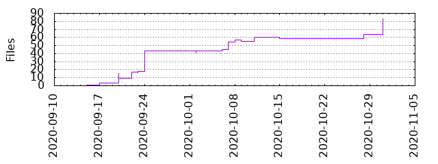

Files
- Total files
- 83
- Total lines
- 36113
- Average file size
- 19760.81 bytes

| Extension | Files (%) | Lines (%) | Lines/file |
|---|
| 7 (8.43%) | 749 (2.07%) | 107 |
| css | 4 (4.82%) | 102 (0.28%) | 25 |
| html | 2 (2.41%) | 69 (0.19%) | 34 |
| ico | 2 (2.41%) | 18 (0.05%) | 9 |
| js | 14 (16.87%) | 642 (1.78%) | 45 |
| json | 9 (10.84%) | 380 (1.05%) | 42 |
| lock | 4 (4.82%) | 32647 (90.40%) | 8161 |
| md | 4 (4.82%) | 170 (0.47%) | 42 |
| png | 7 (8.43%) | 271 (0.75%) | 38 |
| py | 1 (1.20%) | 13 (0.04%) | 13 |
| rules | 1 (1.20%) | 8 (0.02%) | 8 |
| sh | 4 (4.82%) | 153 (0.42%) | 38 |
| svg | 3 (3.61%) | 53 (0.15%) | 17 |
| ts | 6 (7.23%) | 310 (0.86%) | 51 |
| tsx | 12 (14.46%) | 755 (2.09%) | 62 |
| txt | 1 (1.20%) | 3 (0.01%) | 3 |
| xml | 1 (1.20%) | 9 (0.02%) | 9 |
| yml | 1 (1.20%) | 31 (0.09%) | 31 |